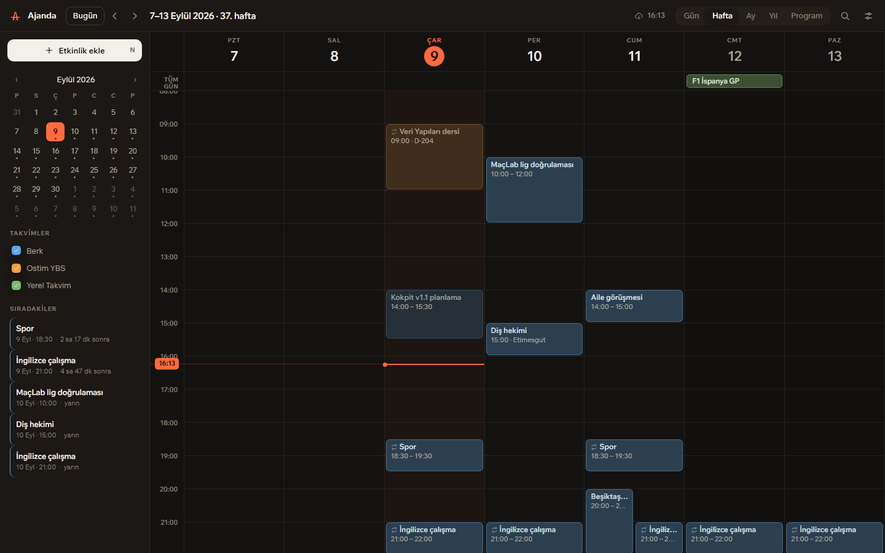
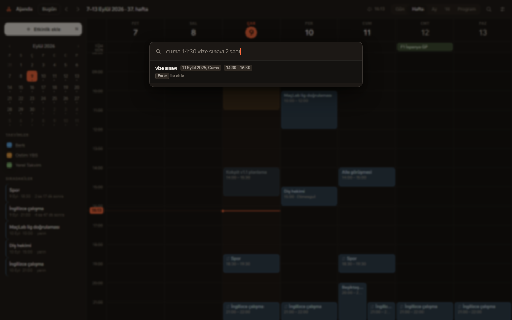
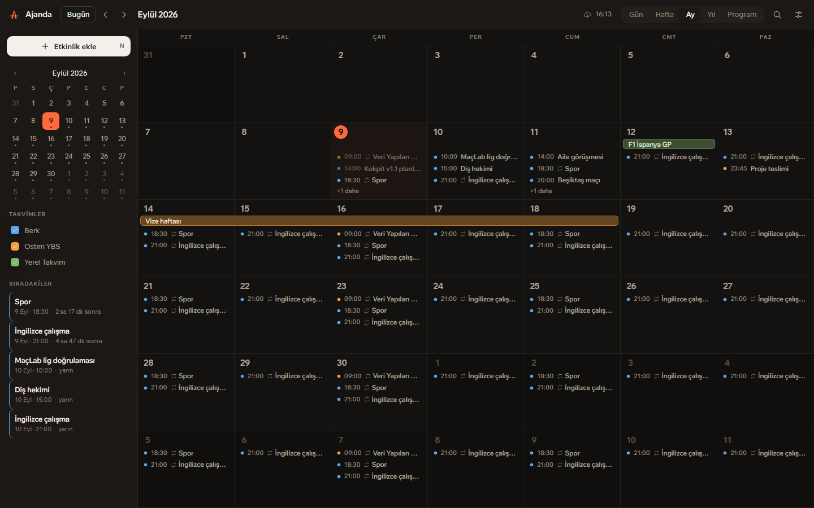
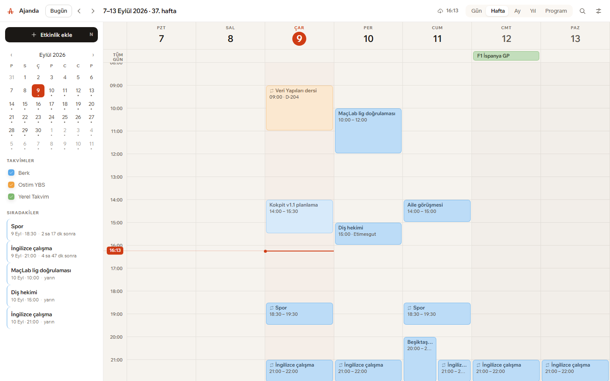

Takvimin sende kalsın.
Google'la da senkron olsun.
Ajanda etkinliklerini kendi bilgisayarındaki tek bir dosyada tutar ve Google Takvim ile çift yönlü senkronlar. Telefonda eklediğin buraya, burada sürüklediğin oraya gider. İnternet yokken de tam çalışır.
Windows 10/11 · ücretsiz ve açık kaynak · yönetici yetkisi gerekmez

Cümleyi yaz, olay kurulsun
Ctrl+K ile aç, Türkçe yaz, Enter'a bas. Tarihi,
saati, süreyi ve tekrarı cümleden çıkarır. Aynı kutu arama da
yapar.
| cuma 14:30 vize sınavı 2 saat | → Cuma 14:30–16:30 |
| her salı 18:00 antrenman | → haftalık tekrar |
| hafta içi 09:00 ders | → pazartesi–cuma |
| 12 eylül doğum günü | → tüm gün |
| öbür gün akşam maç | → 2 gün sonra 20:00 |

Beş görünüm, tek ritim
Gün, hafta, ay, yıl ve program. Ay görünümünde çok günlü etkinlikler hafta sınırını aşan tek şerit olarak çizilir — gün gün kopmaz. Program görünümü boş günleri atlar.
Her takvim kendi rengini gövde, kenar ve başlıkta birden taşır; okul, kişisel ve takip ettiğin takvimler lejant okumadan ayrılır.

Günlük kullanım için
Uygulama günde birkaç kez, kısa süre açılır. Açıldığı anda “bugün ne var” sorusunu cevaplaması gerekir.
Sürükleyerek düzenleme
Boş alana sürükleyip oluştur, bloğu taşı, alt kenarından süreyi uzat. 15 dakikalık adımlarla oturur.
“Şimdi” çizgisi
Saatini kendi taşıyan tek sıcak çizgi. Açılışta bir kez uzayarak gelir; gözün ilk oraya düşer.
Sıradakiler
Kenar rayında bir sonraki beş şey, “14 dk sonra” gibi geri sayımla.
Hatırlatıcılar
Windows bildirimi olarak gelir. Kapatınca uygulama tepsiye iner, hatırlatmalar çalışmaya devam eder.
Tekrarlar
Günlük, haftalık, aylık, yıllık — “ayın 2. salısı” dahil. Google ile aynı kural biçimini kullanır.
Klavye
T bugün, ←/→ gezinme,
N yeni, R senkron,
1–5 görünüm.
Açık ve koyu tema
İkisi de ayrı ayrı ölçüldü; metin kontrastları erişilebilirlik eşiğinin üstünde.
Çevrimdışı çalışır
Google bağlı olmasa da tam çalışır. Bağlantı gelince bekleyen değişiklikler gönderilir.
Senkron, aradaki sunucu olmadan
Ajanda kendi Google anahtarıyla gelmez; kendi anahtarını kendin oluşturursun. Böylece takvimin üçüncü bir sunucudan geçmez — uygulama doğrudan senin hesabınla konuşur. Tek seferlik, beş dakikalık bir iş:
- Google Cloud Console'da yeni bir proje aç.
- API'ler ve Hizmetler → Kitaplık yolundan Google Calendar API'yi etkinleştir.
- OAuth izin ekranını Harici seç ve kendi e-postanı test kullanıcısı olarak ekle.
- Kimlik bilgileri bölümünden tür olarak Masaüstü uygulaması ile bir OAuth istemcisi oluştur.
- Çıkan iki değeri Ajanda'da Ayarlar → Google Takvim alanlarına yapıştır ve bağlan. Anahtarlar yalnızca senin bilgisayarında durur.
Kurulumu iki adım
Kurulum dosyasını indir, çift tıkla. Yönetici yetkisi istemez, yalnızca kendi kullanıcına kurulur. Masaüstüne ve Başlat menüsüne kısayol düşer.
Kurulum imzalı olmadığı için Windows SmartScreen uyarı verebilir:
Ek bilgi → Yine de çalıştır. Verilerin
%APPDATA%\com.berk.ajanda\ajanda.db dosyasında durur;
yedeklemek için o dosyayı kopyalaman yeterli.

Açık kaynak, MIT
Tauri v2 ve TypeScript ile yazıldı; arayüzde çerçeve yok, CSS elle yazıldı, ikonlar çizildi. Kodun tamamı GitHub'da.